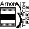
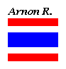

I propose...
- to see my Information Retrieval
References System, click

- to see my DAI References System,
click

- to see my Data Analysis References,
click here
- to see some selective NewsGroups,
click here
- to hear my voice, click here.
- to know about my research,
click here.
- to know more about me, click
here.
- to see my first paper that
has been underdeveloping, click here.
- Authorized person only can
press here!
(-:
- Résumé
of the talk on the 10th october 1995, in MILC mini-meeting.
- To see what we do in my MILC group.
- to mail me some comments,
click 
Feel free to give me your
comments, thank you
Visitor number :


Last
modified: Mon Feb 3 11:01:49 MET